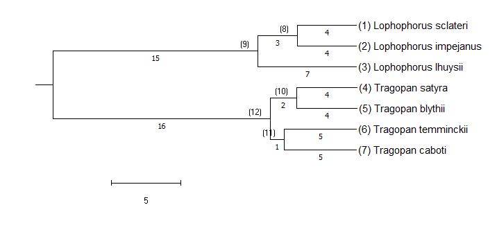
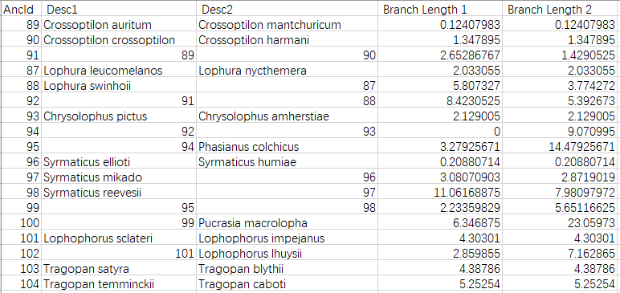

This week’s find is not original finding from my own research project, however, it is derived from part of my pheasant project. Just a small technical problem about how to find ancestor’s every descendants within a phylogenetic tree.
First we should talk about phylogenetic tree. A phylogenetic tree or evolutionary tree is a branching diagram or “tree” showing the evolutionary relationships among various biological species or other entities, wiki says. Leaf nodes (nodes without descendants) of a phylogenetic tree typically mean an extant taxon, either species or higher taxon groups, while other nodes mean inferred (through some models) last common ancestor (LCA). For instance, part of my pheasant species:

How to obtain a tree like this is an interesting but complicated topic which may cost two or three posts to discuss. This week I am just going to discuss one small topic after one has obtained a phylogenetic tree. How can one answer whether a node A is another node B‘s descendants, for example, whether Lophophorus impejanus is an descendants of “species” 12? Or, how can one find all descendants of 12?
The problem is non-trivial, since there are branches. To answer the question, one should have some idea about the general structure of a phylogenetic trees. It contains nodes connected by edges. A set of vertices (nodes) connected by edges, in mathematics, is called a Graph). More specifically, a connected graph without cycle (no time travel for every species!), is called a Tree). When a tree has a natural starting point, or “root”, it can have a canonical direction, either away from the root or towards the root, which makes the tree a directed rooted tree, just like our case of phylogenetic trees in which the natural root can be most ancient ancestor and direction can be same to time. Tree like the one shown above is just a visualization. If you are using MEGA X(Kumar et al. 2018) as I do, you may obtain a csv file showing all linkage of species like this:

Every ancestor has only two descendants in the tree and the structure was totally shown in the csv file. In computer science, a kind of data structure contains value and connections to other nodes (can be pointers in some languages like Cpp) will achieve this function.
Now the problem changes to, how could one search a directed rooted tree? Ton’s of algorithms are developed to solve this problem. A simple but important one of these is called Depth-first Search or DFS. Just as its name, DFS will explores as far as possible along each branch before backtracking to an un-visited branch. The algorithm has to “remember” every nodes it has already visited. And “backtracking” is realized by either recursive or non-recursive implementation. Recursive version is much easier to code. Here shows an example of order of visits from wiki:

One could see why it is called Depth-first from this graph.
Complexity of the algorithm is not complex. Time complexity is linear since it will simply traverse the whole tree (or graph), thus takes time O(|V| + |E|), V stands for number of vertices(nodes) while E stands for edges. For the worst case spatial complexity, the algorithm has to remember whether it has already visited for every single vertices, which needs O(|V|) of memory.
Pseudo-code of recursive implementation:
1 | DFS(v){ |
A simple R implementation for phylogenetic trees (no more than 2 descendants) in order to check whether spc.2 is anc.1’s descendant:1
2
3
4
5
6
7
8
9
10
11
12
13
14
15
16
17
18
19
20
21
22
23
24
25tree <- read.csv('timetreeSpeciestree.csv')
comp <<- data.frame(spc=knot,visit=rep(0,length(knot))) # global memory of visit
woff <<- 1 # whether not descendant
offspring <- function(anc.1,spc.2,tree){
woff <<- woff * (anc.1 != spc.2) #check whther is spc.2, example of operation to vertices
# if(anc.1 == spc.2){return(T)}
comp$visit[comp$spc==anc.1] <<- 1 # knot already visited
if(nchar(anc.1)>=5){
# it is the leaf, stop, no more descendants
return()
# return(F)
}
else {
# if it is not a leaf, go for its left branch
pos <- which(tree[,1]==anc.1)
off.1 <- tree[pos,2]
if(comp$visit[comp$spc==off.1]!=1){
(offspring(off.1,spc.2,tree))# not visited, go
off.1 <- tree[pos,3] # go for another branch
if(comp$visit[comp$spc==off.1]!=1){
(offspring(off.1,spc.2,tree)) # not visited go
}
}
}
}